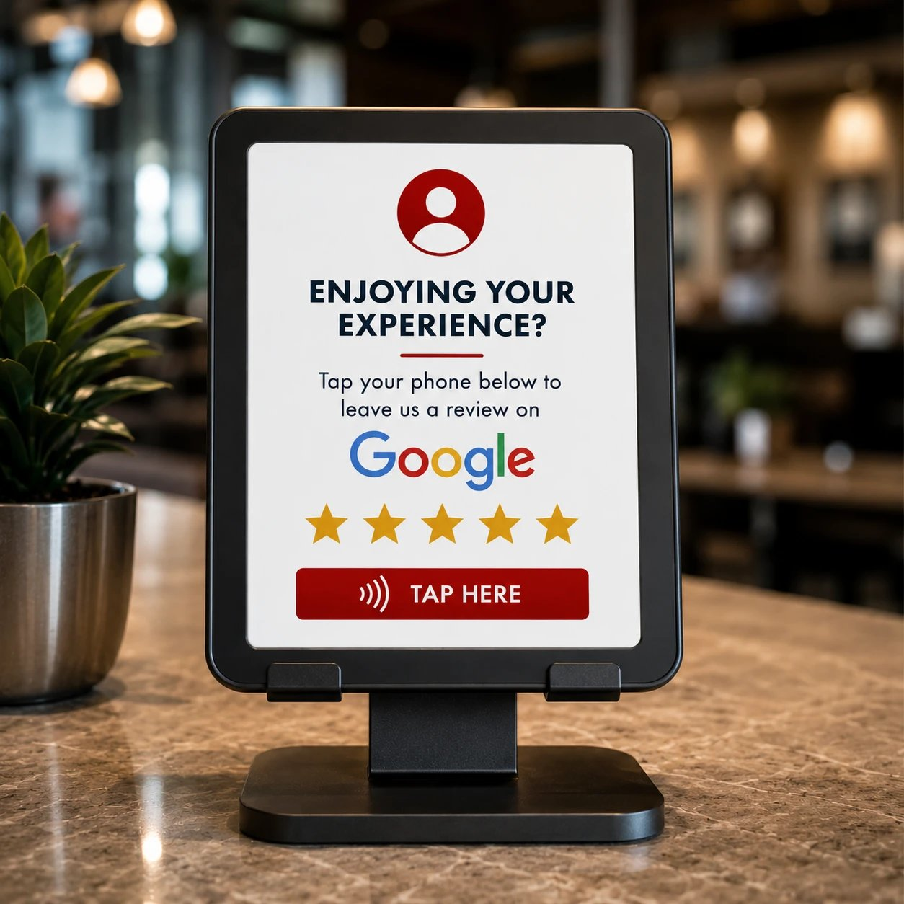

Easy Setup
Place our sleek tablet stand near the exit or checkout counter. Guests simply tap the screen or scan a QR code to leave a review.
Even happy diners often forget to leave a review once they leave your restaurant. Our Review Stands and cards make it effortless for guests to share their experience before they head out the door.
Place our sleek stand near the exit or checkout counter. Guests simply tap the screen or scan a QR code to leave a review — while the experience is still fresh.
Feedback flows directly into your review management system, ensuring that all reviews — positive or negative — are captured and addressed.
ReviewPro Cards are the handheld tap/QR cards your servers carry to the table, so guests can leave a review on the spot without ever leaving their seat.
Request a Demo
Place our sleek tablet stand near the exit or checkout counter. Guests simply tap the screen or scan a QR code to leave a review.
Feedback flows directly into your review management system, ensuring that all reviews — positive or negative — are captured and addressed.
Tailor the interface with your logo, colors and prompts. Encourage guests to mention their favorite dish or server.
Reviews are submitted through encrypted channels and stored safely. We never share diner contact details without consent.
Having a convenient review option on-site increases the likelihood that satisfied guests will share their praise.
If a guest indicates they're unhappy, you can alert a manager to address the issue before the diner leaves — turning a potential negative review into a positive experience.
Compare in-house feedback with online reviews to spot trends and opportunities.
Interested in installing a Review Stand at your restaurant? Request a Demo and see how it can boost your online presence.
Request a demo and start capturing five-star feedback before guests reach the parking lot.